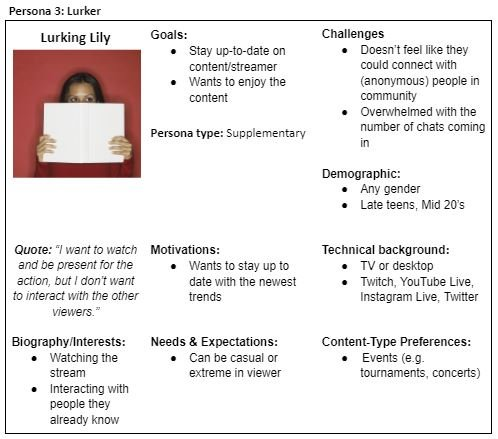

Defining the Problem and Solution
Personas and Problems
From our research, we identified 3 main personas, each with their unique issues. This was especially eye-opening for me, as it helped me better understand the diversity of needs and interests of the target audience, even from our relatively small sample sizes.
Casual Kyle: The Casual Viewer
Casual Kyle has trouble tracking chats and doesn't appreciate offensive or explicit language. Would benefit from filtering/muting chat messages based on message type or user profile.
Hardcore Henry: The Extreme Viewer
Hardcore Henry is focused on conversations about gameplay and skill. Would benefit from focused chat subchannels.
Lurking Lily: The Lurker
Lurking Lily doesn't want to engage with strangers but wants to be in the loop. Would benefit from a private chat space with known friends.
Storyboards and User Flow Diagrams
Our team created a set of storyboards and user flows to understand how our personas would use our design solution. I found this much easier with our personas defined - my first taste of the power of personas!